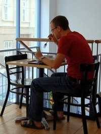
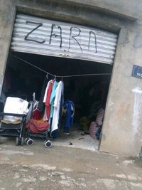

Contrata a Eva Hache para despedir a un empleado
Thu, 24 Nov 2011 13:35:43 +0000
Un exempleado de la empresa de asesoría “Ventosas Hendrichs” ha demandado a la compañía por “despido improcedente” tras ser desvinculado de su fábrica mediante un comunicado en forma de monólogo entregado por la cómica Eva Hache. El empleado, Enrique Cisneros, considera que el método elegido por la empresa para comunicarle su despido atenta gravemente contra [...]
Un exempleado de la empresa de asesoría “Ventosas Hendrichs” ha demandado a la compañía por “despido improcedente” tras ser desvinculado de su fábrica mediante un comunicado en forma de monólogo entregado por la cómica Eva Hache. El empleado, Enrique Cisneros, considera que el método elegido por la empresa para comunicarle su despido atenta gravemente contra sus derechos como trabajador. “No sé hasta qué punto es legal un comunicado de este tipo donde se habla menos de los términos del despido que de taxistas, exnovios y visitas al médico. Y además se me despide por falta de dinero y no sé yo qué es lo que habrá costado contratar a la Eva Hache para que me diga que estoy despedido”, comenta el trabajador.
El despido tuvo lugar junto a la cafetera, donde suelen arremolinarse los trabajadores para celebrar los cumpleaños de los compañeros alrededor de bandejas de pastas. El jefe consiguió reunirlos usando como cebo una pequeña caja de bombones y, una vez estuvieron allí, presentó a la cómica, que arrancó enseguida con un monólogo. “Acabo de venir en taxi, ¿cómo son los taxistas, no?”, dijo para empezar. Posteriormente se pasó media hora explicando lo difícil que es cambiar una rueda para concluir que “lo que no puede ser, no puede ser”. Y de ahí pasó a despedir a Enrique. “Igual que yo no sé cambiar una rueda porque soy mujer, Enrique no sabe hacer informes trimestrales porque es un inútil”, dijo.
Eva Hache pasaba de un tema a otro fugazmente y de una manera muy bien llevada, según señalan todos los testigos. “Estuvo hablando un buen rato sobre cómo reaccionaba su padre cuando ella era pequeña y le entregaba las notas… Y todo el mundo iba diciendo ‘es gracioso porque es verdad, a mí me ha pasao’. Y luego vino cuando me despidió. Y pensé, ‘es gracioso porque es verdad’. La verdad es que tardé un rato en asimilar lo que estaba ocurriendo”, explica el afectado. “Estuve todo el rato sonriendo. Es que hay que reconocer que esta chica es graciosísima. Me reía incluso cuando, después de decirme que estaba despedido, iba haciendo chistes sobre chándals, oficinas del paro y demás”.
“Lo de Enrique es como lo de tu novio que te dice ‘yo te aviso’ y luego ni te avisa ni nada. ¡Y su despido pues es igual, sin avisar!”, decía la presentadora entre las risas de todos los trabajadores. Y controlando las pausas dramáticas y tras esperar que se apaciguaran las risas exclamó mirando a Enrique: “¡Y ahora vas y te lo tragas!”. Para suavizarlo, eso sí, Eva Hache añadió “si en el fondo lo estás deseando malandrín, ya verás qué bien te lo pasarás viendo ‘Crímenes imperfectos’ por las mañanas”. Enrique solo pudo asentir con la cabeza mientras reía. “Es gracioso porque es verdad, es lo que pienso hacer”, repetía una y otra vez.
Finge enviar un mensaje de texto porque está comiendo solo
Tue, 22 Nov 2011 10:04:36 +0000
A las dos del mediodía de ayer, Alberto Postobón pidió mesa para uno en el restaurante “La comisura sabrosa” de Barcelona. Mientras esperaba el primer plato y, especialmente, cada vez que la camarera se acercaba para servirle, el cliente atendía muy concentrado a la pantalla de su teléfono móvil. Pese a que Alberto hacía como [...]
A las dos del mediodía de ayer, Alberto Postobón pidió mesa para uno en el restaurante “La comisura sabrosa” de Barcelona. Mientras esperaba el primer plato y, especialmente, cada vez que la camarera se acercaba para servirle, el cliente atendía muy concentrado a la pantalla de su teléfono móvil. Pese a que Alberto hacía como que chateaba e incluso fingía reírse y asentía con la cabeza, fue la camarera la que se dio cuenta de que en realidad su móvil no solo no era un “smartphone” sino que estaba apagado.
“No he visto nada que me diera tanta lástima en la vida, ni siquiera aquella vez que vi a un niño hablar con una de sus costras”, ha declarado la camarera, María Ramos, quien se quedó mirando la escena durante unos segundos con los ojos llorosos. En ese momento, Alberto dijo en voz alta, como si estuviera tecleando: “la kmarera se ha dao cuenta de k finjo pasalo”.
Después de que la chica derramara “sin querer queriendo” parte de la sopa sobre el dispositivo de Alberto, este se vio obligado a leer atentamente los ingredientes de la salsa de soja “como último reducto para seguir aislado en su individualidad”. María le arrancó entonces la salsa de soja de las manos y Alberto se entretuvo con el pollo asado. “A lo doctor Frankenstein. Usó los componentes del teléfono móvil y los introdujo en la pechuga, como si quisiera devolverlo a la vida. No sé si lo hizo para seguir entretenido con algo o porque realmente buscaba conseguir un ser vivo con el que poner fin a su soledad”, explica María, quien no entiende por qué “cuesta tanto mirar a los ojos de otro ser humano y tender una mano con lazos de amistad”.
Al salir del restaurante, Alberto cogió un taxi y, pese a que el celular se había quedado en el interior de su segundo plato -que no pudo comerse-, volvió a fingir enviar un mensaje de texto para no tener que hablar con el conductor. Llegó incluso a forzar la situación diciendo “voy a enviar un mensaje de texto, un dulce y largo mensaje de texto”. Posteriormente, para que no se viera que no llevaba móvil, metió los brazos y la cabeza dentro de su jersey de punto. “Y claro, se mareó y vomitó. La suerte es que todo quedó dentro del jersey. Ni siquiera le cobré, le abrí la puerta y se dejó caer al asfalto”, explica el taxista. Mientras el coche se alejaba de allí, Alberto seguía deletreando “dnd kdamos” a voz en grito.
Amancio Ortega se harta de todo y empieza de cero
Sun, 20 Nov 2011 22:00:29 +0000
El hombre más rico de España, dueño del imperio Inditex (Zara, Bershka, Stradivarius y otras cadenas pertenecen al grupo) ha anunciado que “cierra el chiringuito” con la intención de “empezar de cero otra vez”. Este gallego hecho a sí mismo, cuyos inicios se remontan a la fabricación y venta de batas de boatiné durante los [...]
El hombre más rico de España, dueño del imperio Inditex (Zara, Bershka, Stradivarius y otras cadenas pertenecen al grupo) ha anunciado que “cierra el chiringuito” con la intención de “empezar de cero otra vez”. Este gallego hecho a sí mismo, cuyos inicios se remontan a la fabricación y venta de batas de boatiné durante los años sesenta, quiere demostrar “a estos chavales de hoy en día” que levantar una de las mayores fortunas del mundo no es tan difícil. “Seguir así ya no era ningún reto. La rutina ha sido más fuerte y ya no me bailaba un gusano en la tripa”, dice.
“He conseguido un puestecito en un mercadillo de Lugo y empezaré por ahí. Lo de contratar chinos ya lo haremos más tarde, no hay prisa. Estoy emocionadísimo”, explica el magnate. Por ahora tiene empleadas a 15 mujeres que cosen desde casa. “No pienso sacarme ni el permiso de venta ambulante, a ver si me trincan. Es para añadir un poco de chispa al asunto, obstáculos y eso”. Aprovechará cualquier oportunidad para ponerse dificultades que hagan el proceso más interesante. “Esto es como cuando los chavales se pasan un videojuego y lo hacen otra vez en modo experto”.
Desde Inditex se muestran preocupados por el hecho de que una tienda de ropa tenga el mismo nombre que su principal marca. “Es normal que la llame así porque es su tienda, pero pone a Zara en una posición incómoda, sin duda”, explica un alto cargo de Inditex. Desde Zara son plenamente conscientes de que en unos años empezará a fabricar la misma ropa que ellos y puede que incluso a ocupar los mismos locales. “Ya veremos qué sucede. Si nos desmonta el chiringuito espero que nos vuelva a contratar a todos”.
Por lo pronto, el empresario está más que satisfecho con su nueva trayectoria profesional y vuelve a tener el corazón lleno de ilusión. “Amasar ingentes cantidades de dinero ya no era lo mismo que antes, al final aburre. En Zara ya lo hacíamos todo igual que el resto de la gente. Y finalmente solo te quedan dos opciones: aguantar un poco más o echarlo a suertes”, sentencia.
Apple demanda al cáncer de páncreas
Thu, 17 Nov 2011 11:59:05 +0000
“Alguien tenía que plantarle cara de una vez”. Con estas palabras, el nuevo consejero delegado de Apple, Tim Cook, ha comunicado a los medios congregados en la sede de la empresa su intención de demandar al cáncer de páncreas: una acción legal sin precedentes en la historia de la justicia americana. Rodeado por el medio [...]
“Alguien tenía que plantarle cara de una vez”. Con estas palabras, el nuevo consejero delegado de Apple, Tim Cook, ha comunicado a los medios congregados en la sede de la empresa su intención de demandar al cáncer de páncreas: una acción legal sin precedentes en la historia de la justicia americana. Rodeado por el medio centenar de abogados que representará en los tribunales al gigante de Silicon Valley, Cook ha asegurado que no piensan permitir más injerencias en la gestión de su empresa, en clara referencia al reciente fallecimiento de Steve Jobs por un cáncer de páncreas.
“Los cambios en la dirección los decide la Junta de accionistas de Apple, no un grupo de células malignas que atacan indiscriminadamente”, ha declarado Cook, quien ha querido dejar claro que uno de los principales argumentos para demandar al cáncer de páncreas ha sido ese precisamente la arbitrariedad con la que actúa esta enfermedad.
“Steve se alimentaba solo de zanahorias, no fumaba, no bebía, no se drogaba y además era budista: ¿alguien me puede decir qué argumento tenía el cáncer de páncreas para ir a por él? Yo mismo respondo a la pregunta: ninguno”, ha sentenciado Cook.
Para respaldar su demanda, el equipo jurídico de Apple presentará una lista de personas mucho más merecedoras que Jobs de sufrir un cáncer de páncreas y que, sin embargo, están más frescas que una lechuga: “No solo son una panda de borrachos, drogatas y ateos, además no han hecho nada útil en su vida: por supuesto no han inventado ni el iPod, ni el iPhone, ni el iPad. A lo mejor es ese el problema”, ha sentenciado Cook, dejando entrever que quizá el cáncer de páncreas ha actuado movido simplemente por “envidia cochina” hacia el genial creador de Apple.
Para terminar, han lanzado un aviso a navegantes: “Si no hacemos nada es posible que el diseño del iPhone 5 lo termine decidiendo el virus de la gripe o que la configuración del iPad 3 la elija la fiebre del heno… y por ahí no estamos dispuestos a pasar”, ha dicho Cook en una clara advertencia a otras enfermedades.
Se abre una cuenta de correo en Hotmail “como la gran cosa”
Tue, 15 Nov 2011 11:11:43 +0000
Sergio Martínez, gerente de una pequeña editorial de Barcelona, convocó ayer por la tarde a sus empleados para comunicarles que, a partir de ahora, estará “disponible telemáticamente a través de un servicio creado por Microsoft”. Tras una confusa explicación en la que Martínez pretendía eludir la palabra “Hotmail” al considerar que “lo de ‘hot’ parece [...]
Sergio Martínez, gerente de una pequeña editorial de Barcelona, convocó ayer por la tarde a sus empleados para comunicarles que, a partir de ahora, estará “disponible telemáticamente a través de un servicio creado por Microsoft”. Tras una confusa explicación en la que Martínez pretendía eludir la palabra “Hotmail” al considerar que “lo de ‘hot’ parece que tenga que ver con una línea erótica”, los empleados comprendieron que su jefe intentaba decirles que había creado una cuenta personal de correo electrónico.
“Le dejamos hablar, estaba muy emocionado. Repartió un dossier creado por él con esquemas en color destinados a convencernos de que el e-mail es el futuro. Se molestó en indicar todos los pasos que debíamos seguir para darnos de alta en Hotmail”, prosigue el empleado. Cuando, finalmente, todos confesaron que ya tenían una cuenta de correo desde hacía años y que, de hecho, ahora se llevaba más “el Gmail”, Martínez reaccionó con incredulidad, insistiendo en que “lo que decís vosotros es otra cosa. Tenéis que ingresar en Hotmail para que seamos compatibles, lo otro es de Mac”.
“Estuvimos valorando la posibilidad de hablarle de los sistemas de mensajería instantánea, del Messenger, el Google Talk e incluso el Whatsapp para móviles. Pero podría estallarle la cabeza”, reconoce la secretaria de Sergio Martínez, que siempre se ha ocupado de organizarle la agenda sin que el gerente tuviera que preocuparse del ordenador. “Se ve que el sábado pasado estuvo repasando uno de esos catálogos del Media Markt que vienen con El País Semanal. Algo debió de ver allí porque de repente se ha convertido en un forofo de la informática”, insiste la mujer.
En estos momentos, Martínez está inmerso en “una experiencia piloto” que consiste, básicamente, en enviarse mensajes a sí mismo para comprobar la rapidez del sistema de correo electrónico. Cuando sus empleados se hayan dado de alta en el sistema, el plan es “reemplazar las reuniones de trabajo por mensajes electrónicos, que se pueden enviar a muchas personas al mismo tiempo, puede que a más de diez en un solo comando de acción. Estos correos de entrada se podrán imprimir desde la misma interfaz, de modo que mi secretaria los irá archivando y tendremos una radiografía en tiempo real y en papel de la actividad de la empresa”. El empresario cree que “hay que renovarse en estos tiempos de crisis y, aunque a la gente le cuesta cambiar, pronto hablaremos del Hotmail como de la electricidad o el cedé”.
Gritar “¡Cuidado!” reduce un 35% el riesgo de accidente
Tue, 22 Nov 2011 17:15:03 +0000
Un estudio de la Universidad Complutense de Madrid ha revelado que expresiones como “¡Cuidado!”, “¡Ojo!” e incluso la suma de ambas, “¡Ojocuidao!”, reducen el riesgo de accidente cuando son proferidas de forma clara y contundente. Los expertos han llegado a esta conclusión después de realizar numerosos experimentos. “Si una persona está en la bañera y [...]
Un estudio de la Universidad Complutense de Madrid ha revelado que expresiones como “¡Cuidado!”, “¡Ojo!” e incluso la suma de ambas, “¡Ojocuidao!”, reducen el riesgo de accidente cuando son proferidas de forma clara y contundente. Los expertos han llegado a esta conclusión después de realizar numerosos experimentos.
“Si una persona está en la bañera y gritas ‘¡Cuidado!’ antes de lanzarle un secador encendido, es más probable que salga de la bañera antes de electrocutarse. Si tiene la suerte de oírte, claro, porque el secador a veces ensordece a la víctima. Hemos hecho pruebas con secadores especiales que gritan ‘¡Cuidado!’ cuando entran en contacto con el agua y los resultados han sido bastante buenos. Ha habido más secadores estropeados que muertos, y esa es una buena proporción” aclara el doctor Rodríguez Marras, responsable del estudio. Rodríguez Marras también argumenta que el accidente nuclear de Chernóbil en 1986 fue especialmente grave “porque nadie gritó ‘¡Cuidado!’ hasta pasadas tres horas”.
Gracias a la colaboración del Cuerpo Nacional de Policía, la investigación de la Universidad Complutense ha podido determinar también que cuando se grita “¡Al ladrón!” después de un robo, las posibilidades de que los delincuentes sean capturados aumentan un 25% “salvo que los ladrones sean rumanos o de otra nacionalidad extrajera, porque en estos a casos no entienden lo que se dice y no se ponen nerviosos”.
Grandes avances en el tratamiento del dolor
El estudio aporta datos que podrían revolucionar los tratamientos paliativos del dolor. “Si te das un golpe y gritas ‘¡Puta!’ o ‘Me cago en la puta madre que me parió’, la percepción del dolor disminuye notablemente. No así cuando se canta ‘Sana sana, culito de rana, si no sana hoy sanará mañana’. Esto es una imbecilidad”, explica Rodríguez Marras. El especialista cree que “dentro de unos años los insultos muy fuertes sustituirán la anestesia”.
El PP ganaría hoy las elecciones generales con mayoría absoluta
Mon, 21 Nov 2011 09:44:55 +0000
Según un sondeo de Sigma Dos presentado esta mañana, de celebrarse hoy las elecciones generales la amplia mayoría de la población seguiría confiando la presidencia del Gobierno a Mariano Rajoy. El Partido Popular mantendría la mayoría absoluta en el Congreso con 186 diputados mientras que el PSOE repetiría la debacle sufrida por el candidato Alfredo [...]
Según un sondeo de Sigma Dos presentado esta mañana, de celebrarse hoy las elecciones generales la amplia mayoría de la población seguiría confiando la presidencia del Gobierno a Mariano Rajoy. El Partido Popular mantendría la mayoría absoluta en el Congreso con 186 diputados mientras que el PSOE repetiría la debacle sufrida por el candidato Alfredo Pérez Rubalcaba en los anteriores comicios, quedándose en los 110 escaños.
“Son resultados cuanto menos sorprendentes teniendo en cuenta que el señor Rajoy no ha hecho absolutamente nada desde que fue elegido el pasado 20 de noviembre. Cierto es que tampoco ha cometido graves errores, pero en una situación crítica como la nuestra no nos podemos permitir un presidente que no actúe”, se lamentaba esta mañana José Antonio Alonso. El portavoz socialista ha querido remarcar también que “se trata solo de una encuesta”. Mariano Rajoy, por su parte, ha atribuido los resultados favorables del sondeo “al trabajo hecho en estas últimas 13 horas”.
En cuanto al resto de formaciones políticas, los resultados siguen siendo calcados a los de las pasadas elecciones del 20N. IU y UpYD mantendrían 11 y 5 escaños respectivamente, Amaiur conservaría su grupo parlamentario con 7 escaños y CiU repetiría también con 16, siendo el PSC incapaz de remontar la situación en Cataluña. El índice de participación electoral sería del 70% aproximadamente.
Espíritu de continuidad
Todos los analistas coinciden en atribuir los resultados del sondeo a la necesidad por parte de los españoles de evitar grandes cambios políticos en una época convulsa. El PP se beneficiaría de este afán de estabilidad y su gobierno de perfil bajo sigue pareciendo el más adecuado. Mariano Rajoy ha insistido en que “lo estamos haciendo bien y por eso las encuestas nos apoyan”. Ha prometido, eso sí, no dejarse influir por los resultados meramente orientativos de los sondeos y seguir gobernando “con la fuerza del primer día”.
Una niña abandona su club secreto por desavenencias con el líder
Thu, 17 Nov 2011 11:59:24 +0000
Sonia Farnera, de 9 años de edad, ha enviado una nota manuscrita durante la clase de castellano para comunicar a su compañero Alvarito Bosch, cabecilla del club secreto “Believers”, que no está de acuerdo con que Marta Recano, eterna marginada de la clase, pase a formar parte del club clandestino. “Alvarito quiere que Marta sea [...]
Sonia Farnera, de 9 años de edad, ha enviado una nota manuscrita durante la clase de castellano para comunicar a su compañero Alvarito Bosch, cabecilla del club secreto “Believers”, que no está de acuerdo con que Marta Recano, eterna marginada de la clase, pase a formar parte del club clandestino. “Alvarito quiere que Marta sea believer porque es prima suya y su madre le ha dicho que le haga caso porque está marginada pero ella siempre nos critica y no puede ser believer”, argumenta la niña, quien considera además que “si empiezan a entrar todos ya no tiene gracia”.
La reacción de Bosch ha sido contundente. Aprovechando la pausa del recreo, ha convocado una reunión de urgencia “por las graves acusaciones de nepotismo de las que he sido objeto”. Durante su discurso, ha lanzado un ultimátum a Sonia Farnera: “La grave coyuntura actual nos obliga a políticas de apertura. El sectarismo desune y no toleraré que las insidias de unos pocos provoquen una crisis de liderazgo que sería fatal para la estabilidad del club. Emplazo a la señorita Farnera a que sume en vez de dividir o renuncie a su cargo por el bien de todos”. La niña, encolerizada, ha exclamado “Tú no mandas” y ha abandonado la reunión con los ojos inyectados en sangre.
“Sonia estaba antes que él y además antes solo éramos niñas en el club secreto”, explica un testimonio que prefiere mantenerse en el anonimato. “Va de que manda mucho pero luego hace lo que su madre le dice”, insiste. Pese a la rápida y contundente reacción del líder, es incuestionable que la nota de Sonia Farnera ha abierto una crisis en el club “Believers”. Proliferan también los rumores de que a Alvarito no le gusta tanto Justin Bieber. “Dicen que mi apoyo al club se debe a un oscuro afán de formar parte de una cadena de mando. Pues bien, se equivocan. Soy más believer que cualquiera de ellas y me sé todos sus vídeos. Cabría preguntarnos, empero, cuáles son las intenciones de la señorita Farnera, cada vez más interesada en cerrar el club a nuevas incorporaciones, como si temiera ver desplazado su protagonismo”, sentencia el líder.
Coacciones, recelos y amenazas de dimisión
Farnera está convencida de que fue un error dejar que los chicos formaran parte del club “Believers”. Cree que es intolerable “que todos sepan que existe el club” puesto que, según ella, uno de los alicientes de esta comunidad era su carácter clandestino. “Pues ahora si me vuelve a preguntar la gente si puede ser believer les diré que sí porque eso ya no es un club secreto porque todos lo conocen”, declara la niña. Aunque Sonia no ha querido confirmarlo, muchos sospechan que su plan es abandonar el club secreto para seguir con su propio proyecto, liderando en solitario una formación exclusivamente femenina. Alvarito Bosch asegura que no se siente amenazado: “No temo al transfuguismo. Soy believer y, por lo tanto, creo en los míos y creo en nuestro proyecto”.
Marta Recano, por su parte, ya está preparando su “uniforme believer” y promete “no decir nada a nadie de esto del club”.
Jarabe de Palo saca un recopilatorio con un único tema
Tue, 15 Nov 2011 18:52:33 +0000
El músico ribagorzano Pau Donés, líder de Jarabe de Palo, ha presentado hoy “Lo mejor de Jarabe de Palo: La Flaca”, una selección de los mejores temas del grupo que, finalmente, se ha concretado en un disco de una sola canción. “Nos propusimos una antología exigente, cuidada. Y al final nos dimos cuenta de que, [...]
 El músico ribagorzano Pau Donés, líder de Jarabe de Palo, ha presentado hoy “Lo mejor de Jarabe de Palo: La Flaca”, una selección de los mejores temas del grupo que, finalmente, se ha concretado en un disco de una sola canción. “Nos propusimos una antología exigente, cuidada. Y al final nos dimos cuenta de que, o metíamos todas las canciones, o metíamos La Flaca y ya está. Para la primera opción esperaremos a editar las obras completas”, ha declarado Donés a los medios.
El músico ribagorzano Pau Donés, líder de Jarabe de Palo, ha presentado hoy “Lo mejor de Jarabe de Palo: La Flaca”, una selección de los mejores temas del grupo que, finalmente, se ha concretado en un disco de una sola canción. “Nos propusimos una antología exigente, cuidada. Y al final nos dimos cuenta de que, o metíamos todas las canciones, o metíamos La Flaca y ya está. Para la primera opción esperaremos a editar las obras completas”, ha declarado Donés a los medios.
Las obras completas a las que se ha referido ya forman parte del próximo proyecto de la discográfica, que tiene como título provisional “Obras completas de Jarabe de Palo: la Flaca y similares”. Al respecto, Donés insiste: “Nos propusimos unas obras completas exigentes, cuidadas. Y al final nos dimos cuenta de que, o metíamos todas las canciones, o no iban a ser unas obras completas. En fin, lo mismo que he dicho hace un momento pero cambiando algún matiz. Así funciono yo, digo cosas parecidas cambiando detalles. Es mi estilo, digo cosas similares cambiando matices. Nos propusimos una antología exigente, cuidada”.
Numerosos críticos musicales consideran que la decisión de editar un recopilatorio con un solo tema implica reconocer que la música de Jarabe de Palo es repetitiva. “Yo no creo que seamos repetitivos. Si nos repitiéramos, el recopilatorio tendría la misma canción muchas veces. En cambio, se trata de un disco que incluye la canción La Flaca una sola vez. No más. No somos repetitivos porque el disco incluye la canción La Flaca y no la misma canción muchas veces. Eso sí sería caer en la repetición. Yo no creo que seamos repetitivos. Nos propusimos una antología exigente, cuidada. Eso es todo”, se defiende el músico.
Los seguidores del grupo han recibido con entusiasmo la antología: “Que no cambien nunca, es lo único que les pido. Cuando Pau se dejó barba a mí casi me da algo. Casi no me atrevo a escuchar el nuevo disco porque, como hayan remasterizado la canción o suene ecualizada de otra manera, volveré a autolesionarme fijo”, confesaba uno de los fans. El propio Pau Donés ha querido tranquilizar a sus fieles seguidores asegurándoles que “nos propusimos una antología exigente, cuidada”.
Descubren una ducha con 278 botes vacíos de champú
Tue, 15 Nov 2011 10:00:55 +0000
El conjunto parece un bosque de colores alojado en una ducha. Son los casi trescientos botes de champú que una madre ha encontrado en la ducha del piso de su hija. María, de 32 años, lleva escasos meses viviendo sola en su piso y desde entonces no ha dejado de acumular botes y botes de [...]
El conjunto parece un bosque de colores alojado en una ducha. Son los casi trescientos botes de champú que una madre ha encontrado en la ducha del piso de su hija. María, de 32 años, lleva escasos meses viviendo sola en su piso y desde entonces no ha dejado de acumular botes y botes de gel y champús que ha ido dejando en su ducha, hasta el punto de que lo tiene difícil para entrar en la misma. La madre de María se presentó en su casa después de que unos vecinos la alertaran reiteradamente debido a los irrespirables y a la vez revitalizantes olores a “melocotón, avena y esencias herbales” que emanaban del piso de la chica.
“En la escalera olía muchísimo a pelo limpio”, comenta un testimonio. “A veces llegaba a casa sintiéndome muy femenina y con muchas ganas de pasar un rato a solas en la ducha, no sé si me entiende”. Segun el vecino, llamaron a los bomberos en repetidas ocasiones pero éstos no acudieron. Finalmente, pudieron ponerse en contacto con la madre de la chica, que dispone de las llaves del inmueble “y que es quien ha descubierto todo el pastel”.
Dentro del piso el olor les condujo hasta el baño, donde encontraron la heterogénea colección de botes de champú, la mayoría de ellos vacíos. “Detrás de uno de los montones de ‘Herbal Essence Liso Seductor’ hallaron a Daniel, el novio de María, quien estaba buscando un bote con algo de jabón para poder darse una ducha.
“El baño de mi novia es como los pájaros de Hitchcock pero con botes de champú”
“Intentaré introducir agua en uno de ellos y luego iré pasando el agua de uno a otro, recogiendo todos los reductos. Podría funcionar… Hice lo mismo con unos botes de tomate en la nevera y los macarrones me quedaron estupendos”, explica. “Le he dicho mil veces a María lo de los botes de champú, pero la verdad es que yo hago lo mismo con los rollos de papel higiénico: antes de terminar uno abro el siguiente porque me gusta nadar en la abundancia”.
Pese al aparente apoyo que presta a su compañera, Daniel no tarda en reconocer que hace dos semanas estuvo aislado durante tres días porque se le cayeron encima todos los tarros de crema de manos de su chica: “Ella estaba fuera de casa y yo me quedé atrapado bajo toda aquella crema. Me vi obligado a alimentarme de Nivea hasta que ella llegó a casa y me sacó de allí. Se me ha quedado una voz demasiado melosa y no puedo saborear la comida porque me resbala rapidísimo hacia el estómago”.